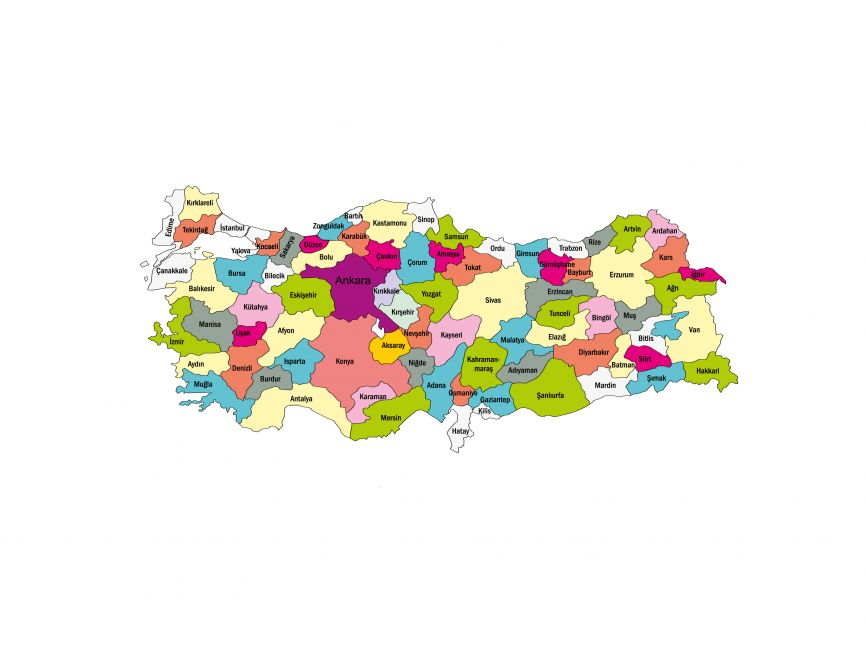
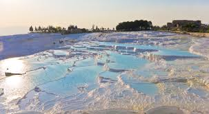
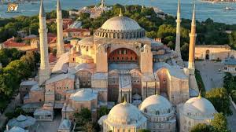

Türkiye
Başkent: Ankara
Yüzölçümü: 783.562 km²
Nüfus: 84 milyon
Para Birimi: Türk Lirası (TRY)
Türkiye, hem Asya hem de Avrupa kıtalarında yer alan stratejik bir konuma sahip bir ülkedir. Zengin tarihi, kültürel çeşitliliği ve doğal güzellikleriyle dikkat çeker. İstanbul gibi metropollerin yanı sıra Kapadokya, Pamukkale, Efes gibi tarihi ve turistik yerler Türkiye'nin cazibesini artırır.
İklim ve Coğrafya
Türkiye, coğrafi olarak farklı iklim tiplerine sahip bir ülkedir. Ülkenin batısında Akdeniz iklimi, doğusunda ise kara iklimi hakimdir. Ayrıca, Türkiye'nin güney kıyıları subtropikal iklim özellikleri gösterirken, iç kesimlerde karasal iklimin etkisi görülür. Türkiye'nin dağlık yapısı, iklim çeşitliliğinin artmasına sebep olmuştur.
Türkiye, Batı Asya'da, Anadolu Yarımadası üzerinde yer alırken, aynı zamanda Avrupa ile sınırı olan tek Asya ülkesidir. Ülkenin kuzeyinde Karadeniz, güneyinde Akdeniz, batısında ise Ege Denizi bulunur. Bu coğrafi konum, Türkiye'yi stratejik olarak önemli kılmaktadır.
Türkiye Haritası

Tarihi Gelişmeler
Türkiye'nin tarihi, binlerce yıl öncesine dayanan zengin bir geçmişe sahiptir. Anadolu toprakları, Hititler, Frigler, Urartular, Lidyalılar ve birçok antik medeniyete ev sahipliği yapmıştır. Ayrıca Roma ve Bizans İmparatorluğu dönemlerinde de önemli bir merkez olmuştur.
1071 Malazgirt Meydan Muharebesi sonrası Selçuklu Türkleri Anadolu'ya yerleşmeye başlamıştır. 1299 yılında Osmanlı Devleti kurulmuş ve 600 yıl boyunca üç kıtada hüküm sürerek büyük bir imparatorluk haline gelmiştir. İstanbul'un 1453'te fethedilmesi, Orta Çağ'ın sona erip Yeni Çağ'ın başlamasına neden olan önemli bir olaydır.
Osmanlı Devleti'nin I. Dünya Savaşı'ndan yenik çıkmasının ardından, 1919 yılında Kurtuluş Savaşı başlatılmış ve 1923 yılında Mustafa Kemal Atatürk önderliğinde Türkiye Cumhuriyeti ilan edilmiştir. Cumhuriyetin ilanıyla birlikte birçok alanda inkılaplar gerçekleştirilmiş, modern ve laik bir devlet yapısı kurulmuştur.
20. yüzyıl boyunca Türkiye, çok partili hayata geçiş, ekonomik kalkınma ve demokratikleşme süreçlerinden geçmiştir. Günümüzde ise Türkiye, hem bölgesel hem de küresel düzeyde etkin bir rol oynamaya devam eden önemli bir ülkedir.
Bayramlar:
Türkiye'de milli bayramlar büyük bir coşku ile kutlanır. 29 Ekim Cumhuriyet Bayramı'nda resmi geçit törenleri, okullarda kutlamalar ve akşamları yapılan fener alayları öne çıkar. 23 Nisan Ulusal Egemenlik ve Çocuk Bayramı, dünyada çocuklara adanmış ilk bayram olarak kutlanırken; 19 Mayıs Atatürk’ü Anma, Gençlik ve Spor Bayramı da gençler için düzenlenen spor etkinlikleri ve gösterilerle kutlanır. Dini bayramlarda ise bayram namazı sonrası insanlar büyüklerini ziyaret eder, çocuklara harçlık ve şeker dağıtılır, sofralarda birlik ve paylaşım ön plana çıkar.

Düğünler:
Türkiye'de düğünler genellikle birkaç gün süren etkinliklerdir. Kına gecesinde gelin, eline kına yakılarak geleneksel türküler eşliğinde uğurlanır. Düğün günü damat alayı ve gelin alma töreniyle başlar, düğün salonunda ya da açık havada devam eden eğlencede halaylar çekilir, çeşitli ikramlar sunulur. Bölgelere göre değişen adetlerle bu özel günler daha da renklidir.

Halk Dansları:
Türkiye’nin dört bir yanında farklı halk dansları vardır. Ege Bölgesi'nde Zeybek, cesaret ve özgürlüğü simgelerken; Güneydoğu'da Halay, kalabalık gruplarla coşkulu bir şekilde icra edilir. Karadeniz Bölgesi'nin hızlı tempolu Horon'u, kemençe eşliğinde oynanır ve adeta bölgenin enerjisini yansıtır. Bu danslar, hem folklorik kimliği hem de toplumsal dayanışmayı temsil eder.

Kapadokya - Türkiye
Kapadokya, eşsiz peri bacaları, yer altı şehirleri ve sıcak hava balonları ile ünlü tarihi bir bölgedir. Nevşehir ilinde bulunan bu bölge, hem doğal güzellikleri hem de kültürel mirasıyla UNESCO Dünya Mirası Listesi'nde yer almaktadır.

Pamukkale Travertenleri - Türkiye
Pamukkale, Denizli ilinde yer alan ve kalsiyum karbonat içeren sıcak su kaynaklarıyla oluşmuş beyaz traverten teraslarıyla ünlüdür. Aynı zamanda antik Hierapolis kentiyle birlikte UNESCO Dünya Mirası Listesi'nde yer almaktadır.

Ayasofya - Türkiye
İstanbul'da yer alan Ayasofya, Bizans ve Osmanlı mimarisinin eşsiz bir sentezidir. 537 yılında kilise olarak inşa edilmiş, daha sonra camiye çevrilmiş ve günümüzde tekrar cami olarak kullanılmaktadır. UNESCO Dünya Mirası Listesi'nde yer alır ve mimari ihtişamıyla dünya çapında ünlüdür.